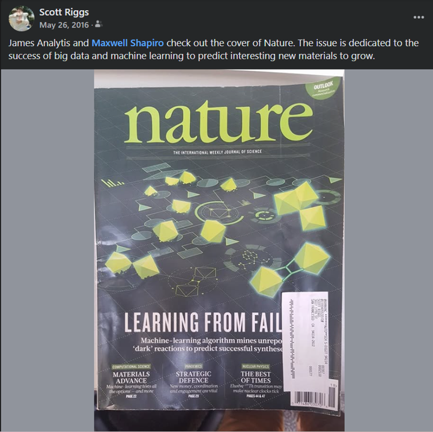

My Journey in Materials Science and AI
Not all those who wander are lost, some are tricked by physics
A long time ago, in a galaxy close by (hint, it's this one), a fresh-faced CS major was lollygagging across campus. "Lollygagging" is the correct southern nomenclature here, folks, because it was the summer and in the south that's as fast as one can humanely move. It just so happened that day the Physics department were having some kind of science demo, only instead of volcanoes made of baking soda, they had… levitation. A little black disk, floating in the air like it had just won a staring contest with gravity and was feeling rather smug about it. Underneath, a rare-earth magnet. "How...." I inquired, with the wide-eyed innocence of youth (here innocence refers to the lack of having spent any time in graduate school), "is that… floating?" "We don't know". "Say again. We don't know?" I sputtered. "It's… floating! You don't know?!" Seven years later, now armed with a PhD in experimental condensed matter physics specializing in this material (and a crippling caffeine addiction), I can now confidently tell you if you ask me why this material levitates… I don't know.
Postdoctoral Work and the Limitations of Traditional Methods

My postdoctoral work at Stanford University with Ian Fisher focused on materials growth, where I experienced firsthand the limitations of traditional methods for materials synthesis. The process of developing growth recipes was time-consuming and inefficient, often requiring a trial-and-error one-knob-at-a-time approach with limited guidance.
AI4Materials before it was cool: the dawn of a hipster
In the ancient year of 2016, the potential of AI to revolutionize materials science was highlighted on the cover of Nature. After reading the issue cover-to-cover, I was bought in, and left academia (I was really bought in) to industry, focusing on applying Deep Learning techniques for process optimization at Lam Research. That was a year before the famous attention paper.
Industry Experience and Leadership
After five successful years at Lam Research, where I spearheaded the development and implementation of machine learning models for process optimization, I transitioned to Applied Materials as a Senior Data Science Manager. In this leadership role, my focus shifted to shaping the company's broader AI vision and strategy within the materials science domain. This involved not only providing technical guidance and developing advanced AI solutions, but also translating complex technical details into digestible insights for cross-functional teams across various Business Units. I championed the adoption of AI-driven approaches by creating comprehensive roadmaps and demonstrating the transformative potential of AI to accelerate materials discovery and development. My role at Applied was centered around evangelizing a data-driven mindset and fostering a culture of innovation to address critical challenges in materials science.
Looking Ahead
Now, with eight years of experience honing my AI skills, I'm eager to combine my expertise with my enduring passion for materials science. I'm seeking an opportunity to contribute to the advancement of this field and drive innovation through the power of AI. I'd love to meet! Let's connect!